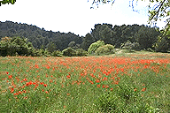
ひなげしの原(Le champ de coquelicots)
（拡大GIF 96K)
1889年の初夏、ゴッホはサン・レミにある精神病院（サン・ポール・ド・モーゾール修道院跡）に入院した。翌1890年の5月まで約1年間をこの病院で過ごした。この2カ月後の7月29日、パリ近郊の小さな村オーヴェール・シュル・オワーズでこの世を去る。
サン・ポール・ド・モーゾール修道院は現在も病院として使用されているが、患者さんたちの迷惑にならない範囲で見学することができる。
| 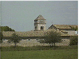 サン・ポール・ド・モーゾール修道院 |
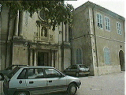 修道院の正面入口 |
ゴッホは1880年にまずアルルを訪れた。アルルで約1年が過ぎたころ、画家ゴーギャンとのいざこざが原因で、自分の耳を切り落とす事件を起こし、アルルの市立病院（現在はエスパース・ヴァン・ゴッホとして公開されている）に入院したあと、ここへ移っている。ひまわりに代表されるアルル時代のモチーフにかわって、病院の周辺で好んで描かれたのがアイリスと糸杉である。糸杉は墓地に植えられる樹だそうだ。墓標のような姿が、彼の目前に迫った死を暗示するようで考えさせられる。
|
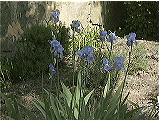 修道院中庭のアイリス |
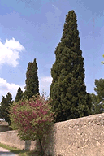 修道院中庭の糸杉 |
サン・レミのツーリスト・インフォーメーションにはゴッホの絵の題材となった場所をまとめた地図がある。これをもらって「ゴッホの散歩道」を歩いた。
|
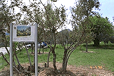 オリーブ畑(Les olivers) |
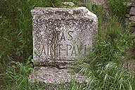 サン・ポールの農家(Le mas St.Paul) |
|
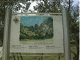 ゆかりの場所に看板が立っている | |
|
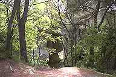 グラナムの競馬場(La carriere) |
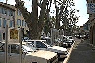 舗装工事人(Les paveurs) |
街の中心にあるゴッホ現代美術センターではゴッホの常設展（ただし写真パネルによる展示）と現代作家の個展が開かれている。プロヴァンス時代のゴッホとその作品を解説したスライドショーを見せてくれるので、時間がある人はどうぞ。さらに詳しく知りたいかたはバーチャルミュジアムへ |
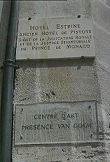 エストリーヌ館。現在はゴッホ現代美術センターとして使われている |
|
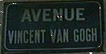 ヴァン・ゴッホ通り |
サン・レミにはこのほかにも市内にたくさんの観光場所がある。この街はあのノストラダムスが生まれた街としても有名だ。「ゴッホの散歩道」の途中にはグラナムの遺跡もある。サドの館にはグラナムで発掘された数々の遺物が整然と展示されている。特に、水晶のとてつもなく大きく見事な指輪は必見。
アルピーユ山脈の美しい山なみを眺めるのもよし。
|
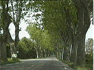 サン・レミの並木道 |
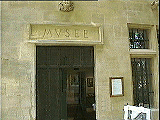 アルピーユ博物館 |
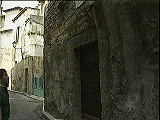 サドの館 |
{kind=link}